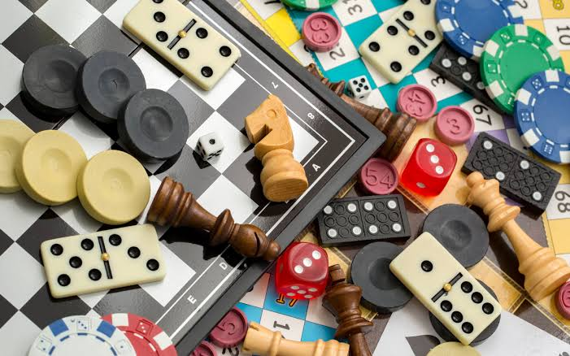

Nuestra historia
Bienvenidxs a Cachín, un sitio creado para disfrutar de una noche diferente, donde la diversión y la competencia se encuentran en un mismo lugar.
La idea de Cachín nace de las clásicas noches de juegos: esas reuniones en las que amigos, familiares y conocidos se juntan para compartir, reírse, competir y pasar un buen rato. A partir de esas experiencias, decidimos llevar el espíritu de las noches de juegos al mundo digital y crear una propuesta que permita disfrutar de diferentes desafíos sin importar dónde te encuentres.

Nuestro objetivo es que cada encuentro se convierta en una experiencia divertida y memorable. Por eso, en Cachín no solo ofrecemos juegos, sino también diferentes alternativas para organizar una noche de juegos personalizada, adaptada a la cantidad de participantes, el tipo de celebración y las preferencias de cada grupo.
Ya sea una reunión entre amigos, un cumpleaños, una juntada familiar o simplemente una excusa para pasar una noche distinta, en Cachín tenemos una propuesta para vos.
¿Qué ofrecemos?
En Cachín nos dedicamos a crear y organizar experiencias de entretenimiento basadas en juegos y desafíos. Contamos con diferentes propuestas para que puedas elegir la modalidad que mejor se adapte a tu grupo.
Dentro de nuestra página podés encontrar distintos juegos pensados para jugar de manera sencilla y entretenida. Además, ofrecemos paquetes de noches de juegos que pueden contratarse para eventos y reuniones.
No importa si sos un experto en juegos o si simplemente querés pasar un buen rato: nuestras propuestas están pensadas para que todos puedan participar.
Nuestros paquetes
Paquete Cachín Básico — $25.000
Una opción ideal para grupos pequeños que quieren disfrutar de una noche de juegos sin demasiada planificación.
Incluye:
- Hasta 6 participantes.
- Acceso a 3 juegos diferentes.
- Duración aproximada de 2 horas.
- Guía básica para comenzar cada juego.
- Tabla de puntuaciones para llevar el registro de la competencia.
- Posibilidad de elegir los juegos antes del evento.
Paquete Cachín Fiesta — $45.000
Pensado para grupos más grandes y reuniones especiales, como cumpleaños, juntadas con amigos o celebraciones familiares.
Incluye:
- Hasta 12 participantes.
- Acceso a 5 juegos diferentes.
- Duración aproximada de 3 horas.
- Selección personalizada de juegos.
- Sistema de puntuación y ranking.
- Desafíos y rondas especiales.
- Organización previa de la noche de juegos.
- Un pequeño premio simbólico para quien consiga la mayor puntuación.
Paquete Cachín Premium — $75.000
Nuestra propuesta más completa para quienes quieren convertir una reunión común en una verdadera noche de juegos.
Incluye:
- Hasta 20 participantes.
- Acceso a todos los juegos disponibles.
- Duración aproximada de 4 horas.
- Selección personalizada de juegos según el grupo.
- Diferentes rondas y desafíos.
- Ranking general de participantes.
- Organización y coordinación de la actividad.
- Desafíos personalizados para el evento.
- Premio para el equipo o participante ganador.
- Posibilidad de adaptar la temática de los juegos a la celebración.
También podés personalizar tu experiencia
Si ninguno de nuestros paquetes se adapta completamente a lo que estás buscando, podemos armar una propuesta personalizada. Podés elegir la cantidad de participantes, duración, juegos y tipo de desafíos que querés incluir.
Los precios pueden variar según la cantidad de personas, la duración del evento y los servicios adicionales solicitados.
¡Empezá a jugar!
Dentro de nuestra página podés encontrar tres tipos de juegos preparados especialmente para disfrutar de tu propia Noche de Juegos Hogareña.
Recorré nuestro sitio, conocé las diferentes propuestas que tenemos preparadas y descubrí cuál será el próximo desafío que vas a superar.
Invitá a tus amigos, reuní a tu familia, formá equipos y preparate para competir.
En Cachín, cualquier noche puede convertirse en una noche de juegos.
Juegos
Trivia
Diviertete con el clasico juego de preguntas, dentro de este puedes encontrarte con todo tipo de desafios intelectuales.
Juego de preguntasCasita Robada
Dentro de este juego de cartas competirias contra una IA para medir tu inteligencia en el clasico la Casita Robada.
Juego de cartasJuego de dados
En este divertido juego de dados consigue una racha de 5 para ganar.
Juego de dadosPuedes verificar tu puntuaciones en el Tablero donde aparte de tus puntos tambien puedes compararte con otros jugadores previos.
Tablero de puntos¿Estás listo para demostrar cuánto sabés?